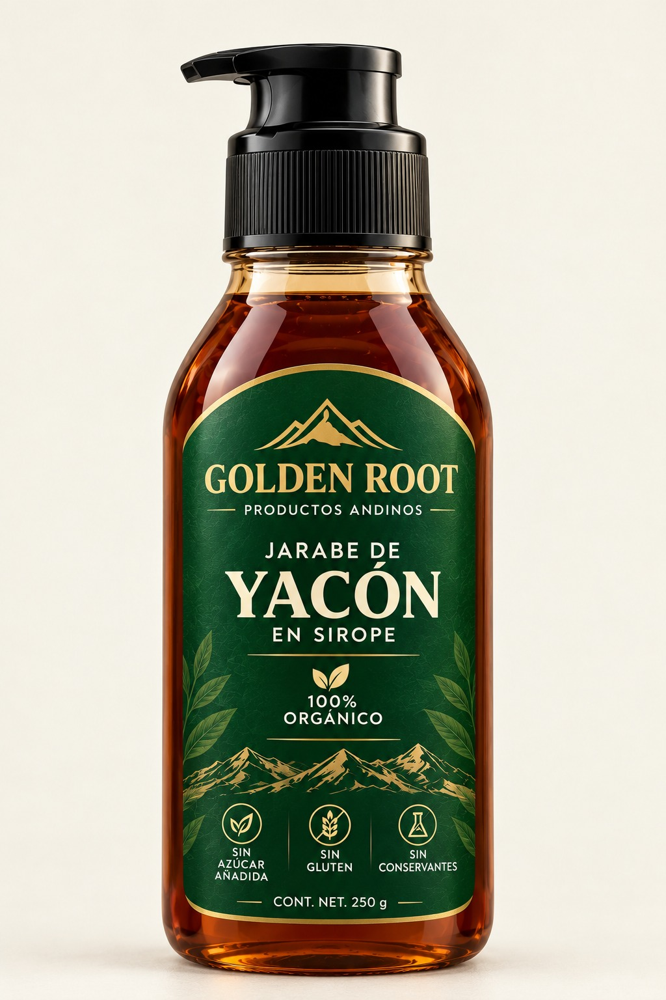
PRESENTACIÓN PROPUESTA
Para descubrir
Sirope de yacón en presentación de 250 gr*.
PRODUCTOS ANDINOS
Los mejores alimentos en tu día.
Tres presentaciones conceptuales para mostrar distintas formas de disfrutar el yacón.

Sirope de yacón en presentación de 250 gr*.
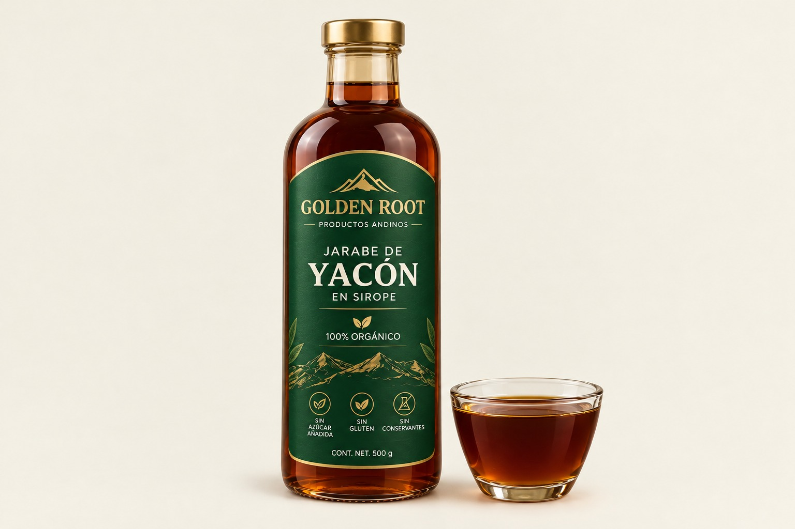
Sirope de yacón en presentación de 500 gr*.
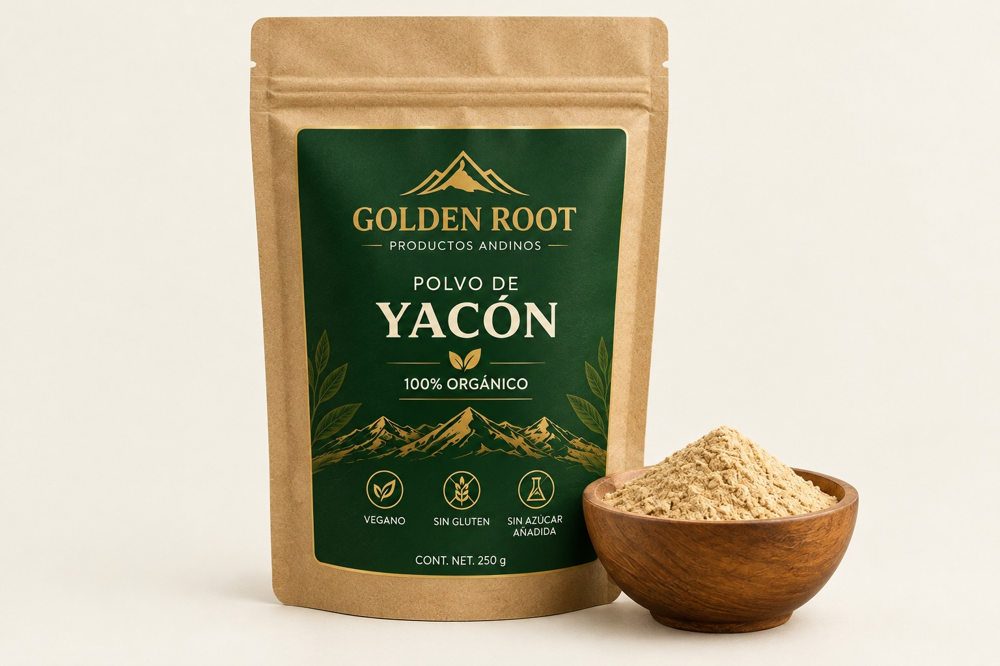
Polvo de yacón en presentación de 250 gr*.
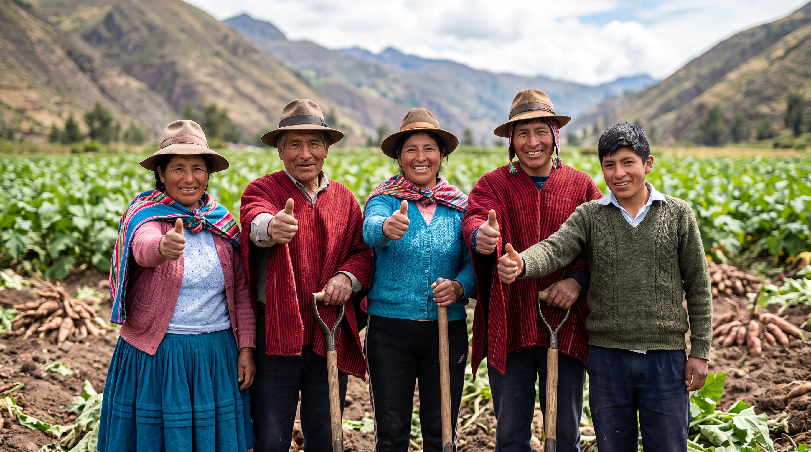
Somos una elección extraordinaria dedicada a superar expectativas de nuestros clientes , ofrecemos productos de gran valor alimenticio para potenciar tu salud.
Somos una empresa sólida, ubicada en Cajamarca, Perú, comprometida con la calidad, la transparencia y la excelencia comercial. Nuestra propuesta de valor se centra en informar de manera clara y oportuna sobre los beneficios de productos andinos, así como en garantizar la transparencia en cada etapa de nuestro proceso comercial. Buscamos construir relaciones comerciales duraderas basadas en la confianza, el respeto y la seguridad de cada transacción, ofreciendo a nuestros clientes una experiencia confiable y satisfactoria.
El yacón es una planta herbácea perenne cultivada por sus raíces de reserva, de pulpa jugosa y sabor naturalmente dulce.
Smallanthus sonchifolius, especie de la familia Asteraceae.
Es originario de Sudamérica occidental; su distribución nativa incluye Perú, Bolivia, Ecuador y Colombia.
Las raíces se extraen cuidadosamente cuando termina el ciclo de crecimiento. La época varía según la región y la altitud.
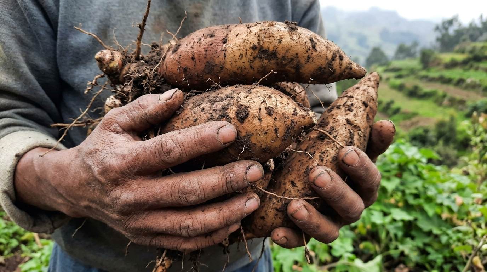
UNA PLANTA DE LOS ANDESConoce las etapas principales de transformación de las raíces de yacón en jarabe y harina.
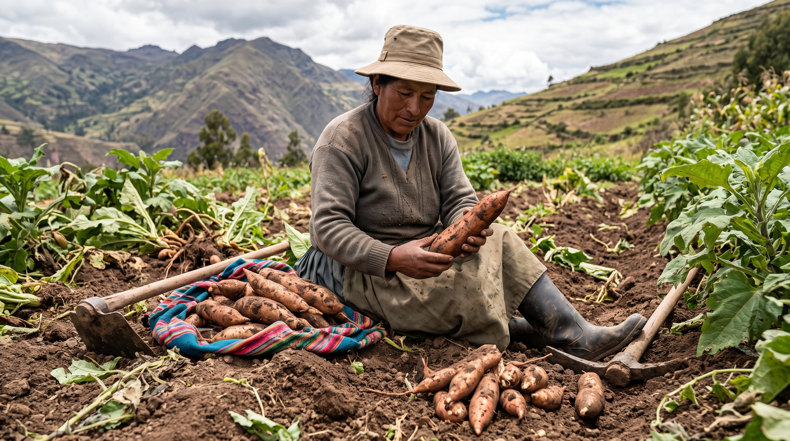
Se eligen raíces frescas y en buen estado, descartando las dañadas o deterioradas para contar con una materia prima adecuada.
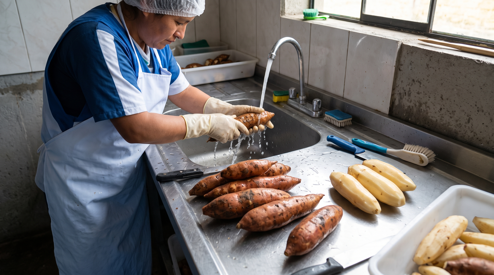
Las raíces se lavan para retirar tierra e impurezas, se pelan y se cortan para preparar la extracción del jugo o la deshidratación.
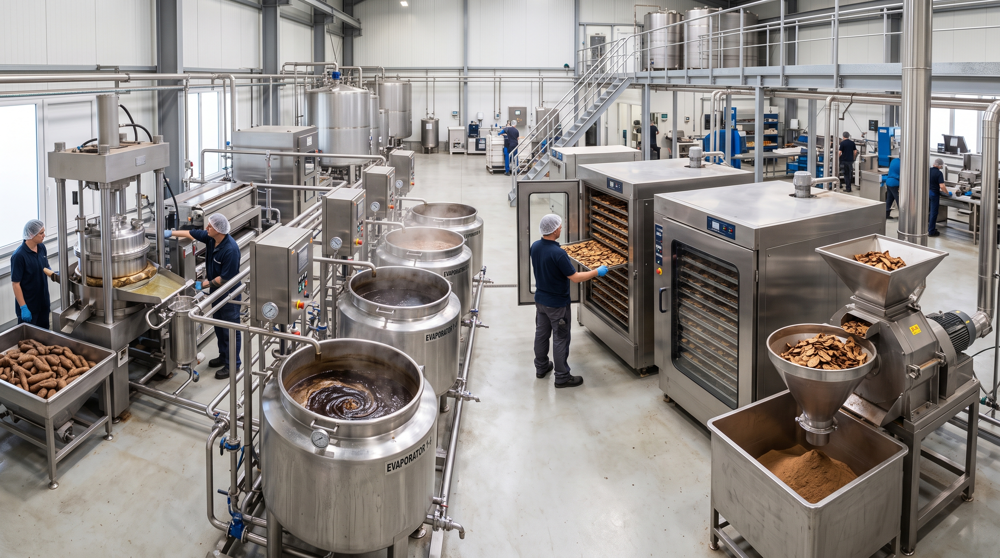
Para el jarabe, se extrae el jugo y se concentra con calentamiento controlado. Para la harina, las raíces se deshidratan y se muelen.
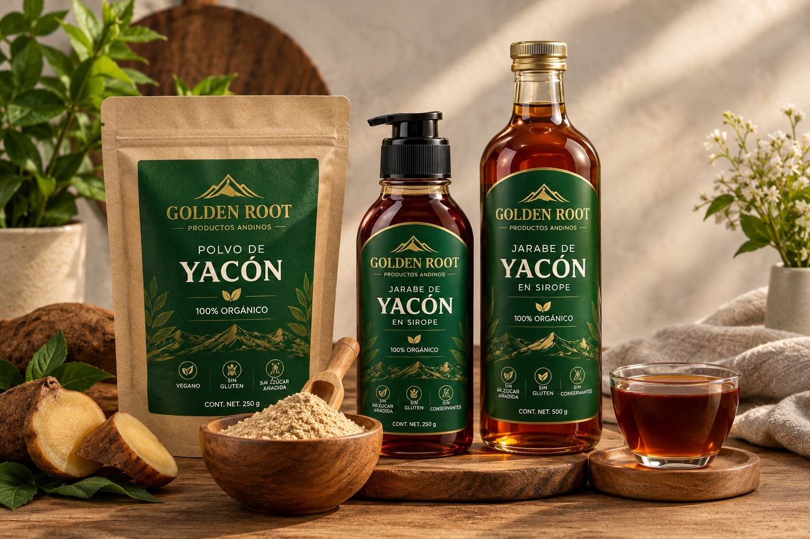
Los productos se colocan en envases limpios y herméticos, se identifican con sus etiquetas y se almacenan en condiciones adecuadas.
Una invitación a explorar distintas formas de incluir el jarabe o la harina en tu mesa, siguiendo las indicaciones que acompañen al producto.
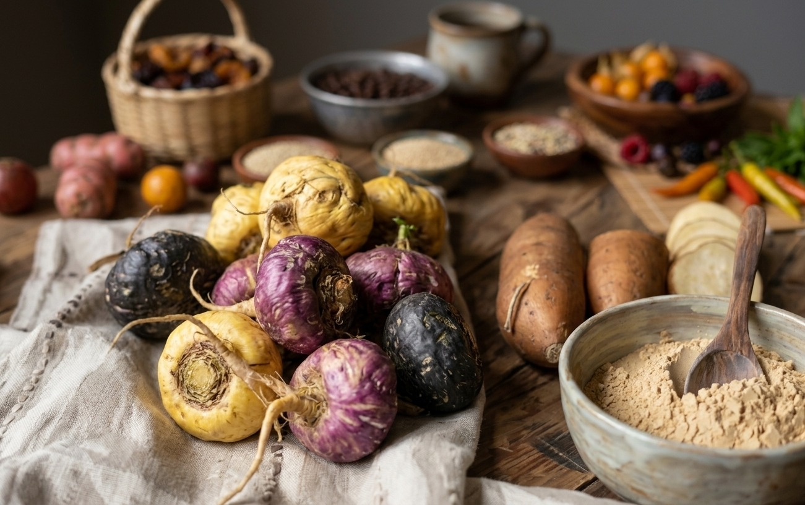
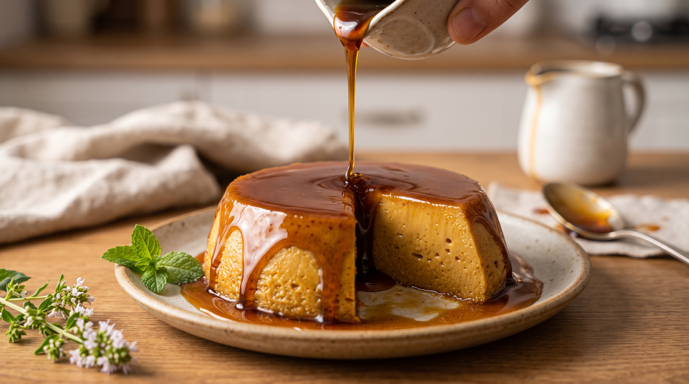
RECETA 01Elaborado con jarabe de yacón, leche evaporada, huevos y vainilla. El jarabe endulza la mezcla y sirve para preparar la cobertura.
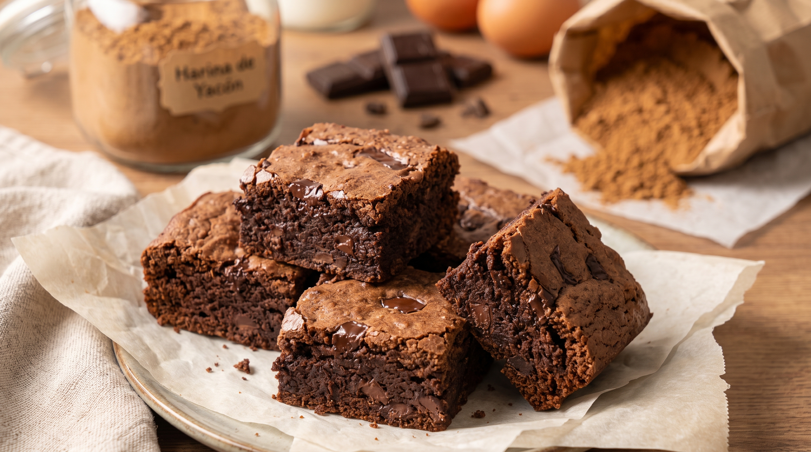
RECETA 02Preparado con harina de yacón, chocolate, huevos y mantequilla. La harina sustituye parcialmente la harina tradicional.
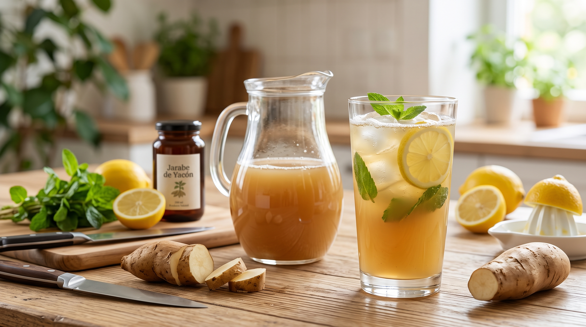
RECETA 03Elaborada con raíz fresca de yacón, agua, limón y jarabe de yacón. La raíz es el ingrediente principal y el jarabe se usa para endulzar.
¿Tienes comentarios sobre nuestro producto? Déjanos un mensaje.
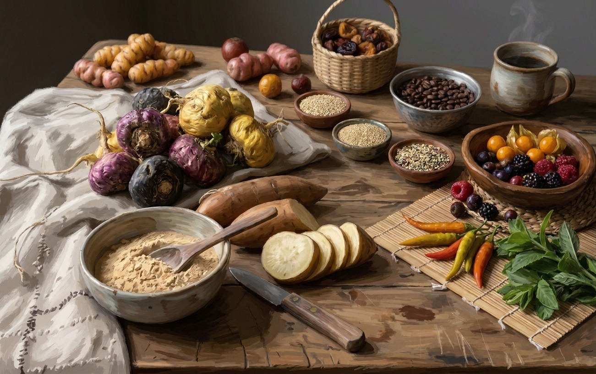